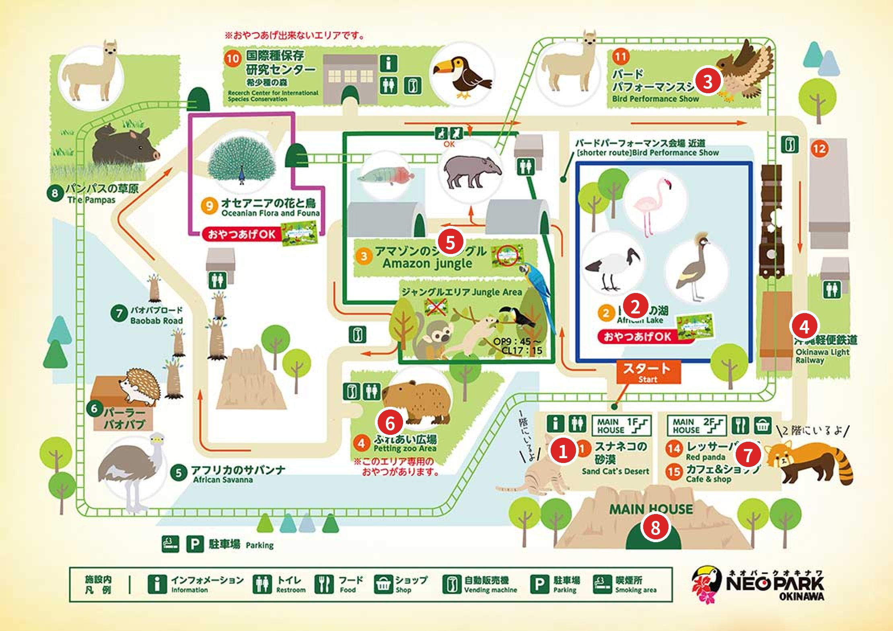

6 大 1 小（2 歲）。10:00 從待遠屋出發（約 22.6 km、35–40 分），10:40 到，12:20 出園，開 7 分到 A&W 名護店吃午餐。
還沒開啟定位。按「開啟我的定位」，手機問要不要允許時選允許。
| 大人（13 歲以上） | 小孩（4–12 歲） | 寶寶（3 歲以下） | |
|---|---|---|---|
| 入園 | ¥1,600 | ¥800 | 免費 |
| 小火車 | ¥1,000（國中以上） | ¥800（4 歲–小學） | 免費 |
| 觸摸廣場 | 4 歲以上一律 ¥500（大人進去也要付） | 免費，需大人陪 | |
6 大人入園＋小火車約 ¥15,600。線上「入園＋小火車」套票我們網頁之前查到大人 ¥2,500（略便宜），現場買也可以；有預售票也不能優先入園。
10:30・11:30・12:30・13:30・14:00・15:00・16:00
一圈 1.2 km、約 20 分，沿路看駱馬、草原、鴕鳥。官網另一處寫末班 16:45，跟時刻表對不起來；10:00、12:00、13:00 只有週日與旺季開。官網註明火車是遊覽用、不是交通工具（繞一圈回原站）。
每天 11:00、14:30。表演中不能進出，提早 10 分到。下雨改成跟鳥合照。會場在官網導覽圖右上角（11 號），真實地圖上的位置是我依導覽圖推估的。
亞馬遜叢林（要走樓梯、暗隧道）可以先砍；鳥類表演和小火車時間固定，優先排。
資料來源：Neo Park Okinawa 官網（園內情報、料金頁，10/19 查）。真實地圖上的導覽圖是舊版手繪圖，我用 OpenStreetMap 的小火車軌道和建築物對位，誤差約 10–20 公尺；官網最新導覽圖是示意圖，比例不準，只看相對位置。開車時間用 OSRM 估算。